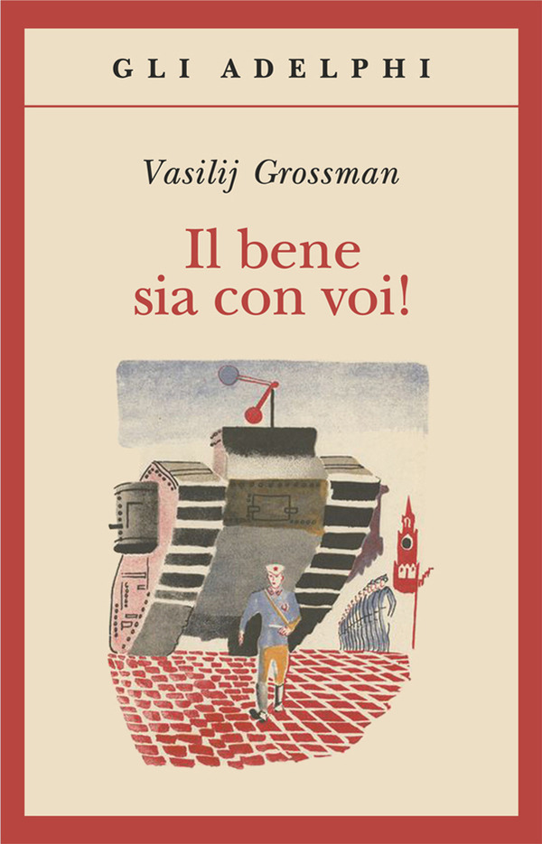

7:32 · 3 OPERE
La normalizzazione dell’antisemitismo.
Il filo del discorso
Dr Divago interpreta alcune reazioni pubbliche all’attacco del 7 ottobre 2023 come manifestazioni di una normalizzazione dell’antisemitismo. Critica il racconto dei media e il trattamento delle vittime, quindi richiama i libri di Robin Shepherd e Daniel Jonah Goldhagen. La conclusione ricorre al racconto Il vecchio maestro di Grossman per interrogare il rapporto fra odio collettivo, memoria e spiegazione razionale.
I libri nel discorso
A State Beyond the Pale
Copertina: Weidenfeld & Nicolson · edizione inglese di riferimento
Immagine associata all’ISBN di riferimento e controllata visivamente; edizione e traduzione non identificate come quelle citate o lette nel video.
Autore, titolo e sottotitolo inglesi nominati nella trascrizione automatica.
Passaggio 4:59 ↗ · Fonti e libro ↗The Devil That Never Dies
Copertina: Little, Brown · edizione inglese di riferimento
Immagine associata all’ISBN di riferimento e controllata visivamente; edizione e traduzione non identificate come quelle citate o lette nel video.
Titolo inglese e sottotitolo seguiti dal nome di Goldhagen.
Passaggio 5:04 ↗ · Fonti e libro ↗
Il vecchio maestro
Raccolta: Adelphi · Il bene sia con voi! · raccolta di riferimento
Copertina della raccolta che comprende Il vecchio maestro secondo il record Braidense VIA0270513. Non è un’edizione autonoma del racconto e non è attribuita alla citazione nel video.
Titolo, autore e scena del medico e del professore sono esplicitamente richiamati.
Passaggio 6:29 ↗ · Fonti e libro ↗